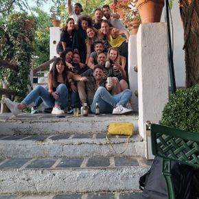

La primera cita que nadie vio venir. Sin aviso, sin Vol. I. Solo música para desnudarse sin palabras
Reproducir →
InvisibleInvisible
Nati Nati [LOG CAMBIO]
Una oda al groove fino y la emoción en loop. Así suena Nati Nati: femenina, profunda, inolvidable
Reproducir →
InvisibleInvisible
Ros In Da House
Invisible
Ritmos profundos y mínimos, texturas orgánicas y matices afro unidos por pulsos melódicos y grooves implacables.
Reproducir →
InvisibleInvisible
Primavera Sound
Invisible
Esta sesión es un viaje sonoro desde una terraza al atardecer hasta un club al borde del amanecer.

Reproducir →
InvisibleInvisible
Terraceo en Graná
Invisible
Sol, groove y buen rollo servido en copa larga. Esta sesión huele a tarde de vermú, palmas discretas y cuerpos bailando sin mirar el reloj.
Reproducir →
InvisibleInvisible
Tributo SpS
Grooves oscuros, vocales embriagadores y esencia tribal con aroma a domingo en Madrid. Revive la magia del templo sonoro que marcó a toda una generación.
Reproducir →
InvisibleInvisible
Jaus Musik
Invisible
El título no es solo un juego de palabras, es una declaración de intenciones.
Una sesión que celebra los himnos que hicieron historia en la pista, voces icónicas y beats que no envejecen.
Ponte cómodo... o mejor, ¡ponte a bailar!